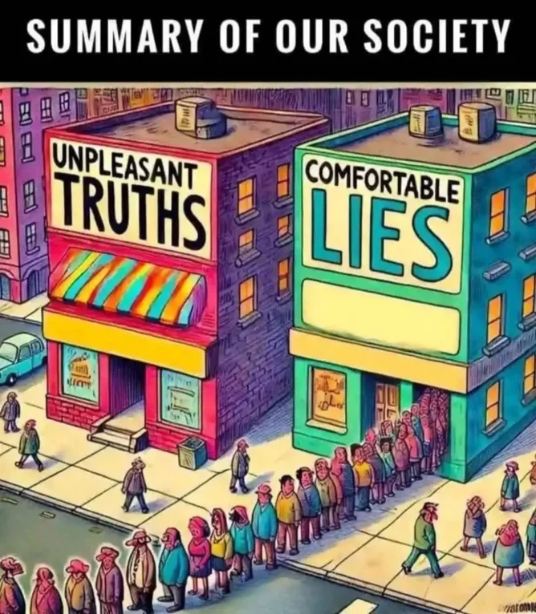

Приятная правда или колючая ложь?
Увидела довольно интересный мем на /r/conservative:

В целом, я никогда не упускала возможности посмеяться над тем, что частью правой пропаганды является попытка увязать правые идеи с литературным жанром рациональности, логики и науки, при этом на практике совершенно не задействуя, собственно, рациональность, логику и науку. Но здесь меня посетила другая мысль…
…а разве не наоборот?
Кто пользуется для пропаганды “приятной ложью”? Неприятная ложь это самая база массовой манипуляции людьми. Евреи пытаются разрушить германскую нацию! Геи насилуют наших детей! Муслимы-террористы подрывают Америку! На вас пытаются оформить кредит, скажите данные карты! Зря ты не закрывал веб-камеру, я записал как ты дрочишь, разошлю всем друзьям!
Насколько вижу я, “неприятная” ложь — которая вызывает панику, тревогу, страх, которая создает опасность, противника, срочность — работает намного лучше, чем “приятная”, на всех уровнях, от политической философии до простой бытовой манипуляции.
Нарратив, что ложь приятна, а правда колется, в моем культурном пузыре повсеместен. Но откуда он взялся? Просто подумалось — а может, он тоже часть манипуляции? Если в культуре превалирует идея, что правда неприятна, то те, кого пытаются обработать неприятной ложью, будут иметь дополнительный повод считать, что это правда. Те, кого запугивают пропагандисты, смогут свысока смотреть на тех, кто не купился на обман — эти овцы живут в своей приятной реальности и не знают, что на самом деле очередные жыдорептилоиды угрожают всему нашему жизненному устрою!
В более общем виде, я часто замечаю, что боль с чего-то ассоциируется с истиной. Перформативный мудацкий цинизм а-ля Рик Санчез кажется аспектом высокого интеллекта. Оскорбительные и “неполиткорректные” шутки не требуют наличия, собственно, юмора — раз у слушающих “подгорело”, то комик прав. И “реализм” в художественной литературе обычно подразумевает “хорошо показано, как все на самом деле плохо”.
Что ж, могу только сказать, что фактоид “в великой мудрости великие печали, и кто преумножает знания, тот преумножает скорбь” это статистическая ошибка. Для среднего человека чем ближе к правде, тем лучше и приятнее. Солнечная Принцесса Георг, которая невероятно умна, но также и крайне несчастна, это статистический выброс, который не должен был учитываться. Бойтесь неприятной лжи, и принимайте с распростертыми объятьями удобную правду.